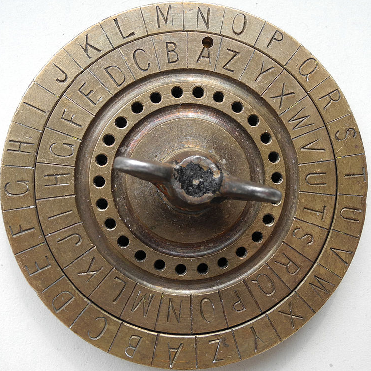
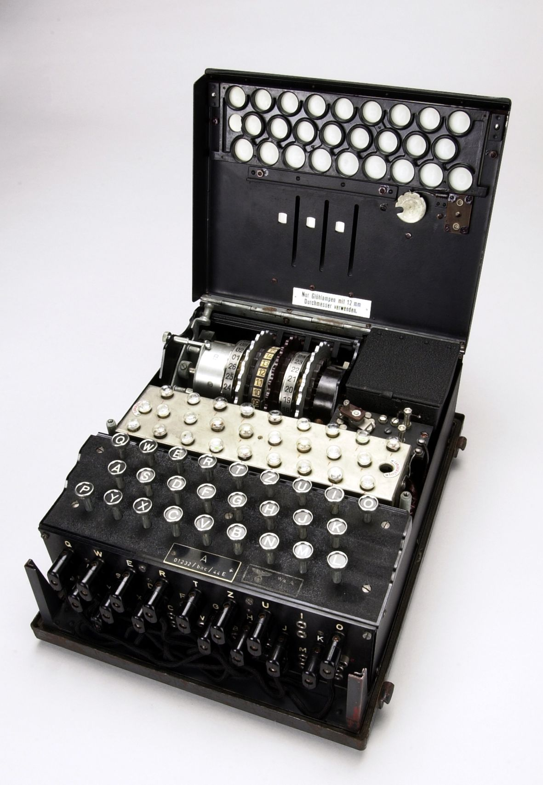

Projecte: Encriptador/Desencriptador de Missatges Secrets
Objectiu
Des de l'antiga Roma fins als serveis d'intel·ligència moderns, la criptografia ha estat essencial per protegir informació confidencial. Juli Cèsar utilitzava un sistema simple però efectiu per enviar missatges secrets als seus generals: el Xifrat Cèsar. Aquest mètode desplaça cada lletra un nombre fix de posicions en l'alfabet.


En aquest projecte, desenvolupareu un programa que permetrà encriptar i desencriptar missatges utilitzant el Xifrat Cèsar. Aprendreu els fonaments de la criptografia mentre practiqueu els conceptes de Python que hem après al tema 3.
Funcionalitats Principals
1. Sistema d'Encriptació
El programa ha de poder:
- Acceptar un text introduït per l'usuari
- Sol·licitar un número de desplaçament (entre 1 i 25)
- Desplaçar cada lletra de l'alfabet el nombre de posicions indicat
- Mantenir les majúscules, minúscules i caràcters especials
- Mostrar el text encriptat resultat
2. Sistema de Desencriptació
El programa ha de poder:
- Acceptar un text encriptat
- Sol·licitar la clau de desplaçament correcta
- Revertir el desplaçament per recuperar el text original
- Validar que la clau sigui correcta
3. Atac per Força Bruta
Quan no es coneix la clau, el programa ha de:
- Provar automàticament tots els desplaçaments possibles (1-25)
- Mostrar cada intent al usuari
- Permetre que l'usuari identifiqui si és el text correcte o no
- Seguir validant amb l'usuari fins trobar la clau
4. Menú Interactiu
El programa principal ha d'incloure:
- Un bucle principal que mostri les opcions
- Control d'errors per entrades incorrectes
- Opció per sortir del programa
Exemple de Funcionament
================================
ENCRIPTADOR CÈSAR
================================
1. Encriptar missatge
2. Desencriptar missatge (amb clau)
3. Desencriptar amb força bruta (sense clau)
4. Sortir
================================
La teva elecció: 1
Introdueix el text a encriptar: Hola món!
Desplaçament (1-25): 3
TEXT ENCRIPTAT: Krod póq!
CLAU: 3
================================
ENCRIPTADOR CÈSAR
================================
1. Encriptar missatge
2. Desencriptar missatge (amb clau)
3. Desencriptar amb força bruta (sense clau)
4. Sortir
================================
La teva elecció: 2
Introdueix el text encriptat: Krod póq!
Desplaçament (1-25): 3
TEXT ORIGINAL: Hola món!
================================
ENCRIPTADOR CÈSAR
================================
1. Encriptar missatge
2. Desencriptar missatge (amb clau)
3. Desencriptar amb força bruta (sense clau)
4. Sortir
================================
La teva elecció: 3
Introdueix el text encriptat: Krod póq!
Provant totes les claus...
Clau 1: Jqnc ónp!
¿És correcte? (s/n): n
Clau 2: Ipmb nóo!
¿És correcte? (s/n): n
Clau 3: Hola món!
¿És correcte? (s/n): s
TEXT DESXIFRAT: Hola món!
CLAU TROBADA: 3
Com funciona el Xifrat Cèsar?
El sistema és més simple del que sembla. Penseu en l'alfabet com una línia circular:
A B C D E F G H I J K L M N O P Q R S T U V W X Y Z
Per encriptar amb desplaçament 3:
- H → K (H + 3 posicions)
- o → r (o + 3 posicions)
- l → o (l + 3 posicions)
- a → d (a + 3 posicions)
- z → c (z + 3 posicions; si arribem al final de la llista tornem al començament)
Requeriments Tècnics
Conceptes Obligatoris
-
Bucles
whileper menús i recorregut de text -
Condicionals
if/elif/elseper decisions i validacions - Funcions per organitzar el codi modularment
-
Manipulació de cadenes amb mètodes com:
len()- Longitud del textisalpha()- Detectar lletresisupper()/islower()- Detectar majúscules/minúscules- Indexació de cadenes
texto[i] - ...
Estructura Recomanada
Organitzeu el programa en funcions específiques:
encriptar(text, desplaçament)- Gestiona la encriptaciódesencriptar(text, desplaçament)- Gestiona la desencriptaciófuerza_bruta(text)- Prova totes les claus possiblesvalidar_entrada()- Assegura entrades correctesmostrar_menu()- Mostra les opcions disponibles
Reptes Addicionals (Opcionals)
Per als que vulguin anar més enllà, intenteu:
- Afegir suport per caràcters amb accents (à, è, é, ò, etc.)
- Implementar un sistema per guardar/recuperar missatges encriptats
- Afegir xifrats addicionals (com el xifrat per transposició)
Consells Pràctics
- Comenceu per la funció d'encriptació, és la més directa
- Proveu amb textos curts i desplaçaments petits al principi
- Assegureu-vos que el programa gestiona correctament els espais i signes de puntuació
- Feu proves amb el vostre propi nom o frases senzilles
- Recordeu que el desplaçament ha de ser circular (Z + 1 = A)